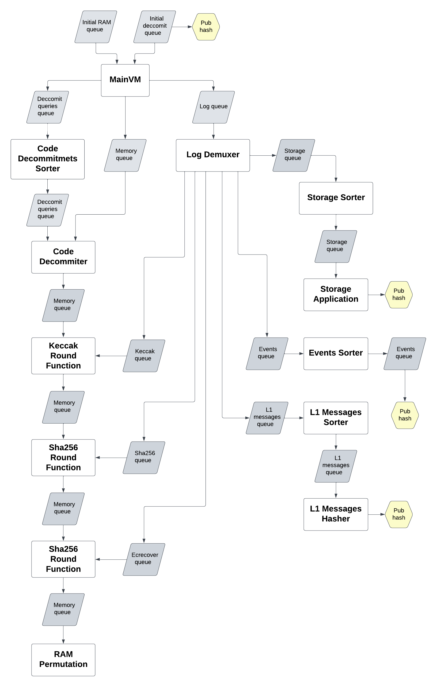

Circuits
General description
The main circuit is called MainVM. It is the one where all the main logic happens.
It consists of multiple cycles, where on each iteration we take a next opcode and try to execute it the following way:
#![allow(unused)] fn main() { if opcode == Add { // do addition } if opcode == SRead { // do storage read } ... }
You may notice that Add instruction is much simpler than the SRead one. When you work with circuits you still need
to execute every opcode.
That’s why we can use the following approach:
#![allow(unused)] fn main() { if opcode == Add { // do addition } if opcode == SRead { storage_queue.push((address, value)); // proof storage read in other circuit } ... }
So instead of proving SRead we just push a proving request, that will be sent to another circuit, that will prove it.
That’s how we can make our prover structure more optimized and flexible.
For now, we have 13 base layer circuits:
They mostly communicate by queues (the diagram of communication is below).
Public Input structure
Public Input (PI) is some piece of data, that is revealed to the verifier. Usually, it consists of some inputs and outputs.
The main challenge for base layer circuits is the ability to prove unlimited amount of execution. For example, our
MainVm circuit can handle execution of $x$ opcodes. Then, if some transaction causes execution of more than $x$
opcodes, we won’t be able to prove it. That’s why every circuit could be extended to multiple instances. So you can
always use $n$ MainVm instances to handle up to $nx$ opcode executions.
All circuits have the following PI structure:

| start flag | Boolean that shows if this is the first instance of corresponding circuit type |
|---|---|
| finished flag | Boolean that shows if this is the last instance of corresponding circuit type |
| Input | Structure that contains all inputs to this type of circuit (every instance of one circuit type has the same input) |
| FSM Input and FSM Output | The field has the same structure. It represents the inner state of circuit execution (the first fsm_input is empty, the second fsm_input equals the first fsm_output and so on…) |
| Output | Structure that contains all outputs of this type of circuit (the last instance contains the real output, the output field of the others is empty) |
The code implementation can be found here.
In terms of Arithmetization we don’t allocate all these fields like public input variables. A more efficient approach
would be computing commitment of type [Num<F>; 4] with poseidon2 and then allocating these 4 variables as public
inputs.

The equality of corresponding parts in different circuits is done during aggregating base layer circuits. Aggregating is done by recursion level circuits that also verify base layer proofs. For now this is out of our scope, so we will focus only on base layer.
How do all the base layer circuits fit together

All base layer circuits inner parts
There are a couple of circuits that do queue sorting. Here is the page that describes the algorithm: Sorting